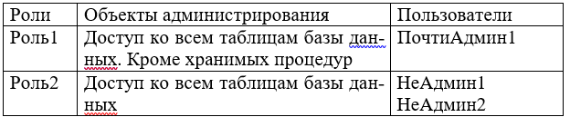

ПРАКТИЧЕСКАЯ РАБОТА №3. ИЗУЧЕНИЕ КОМАНД АДМИНИСТРИРОВАНИЯ ДАННЫХ ДЛЯ СРЕДЫ ОДНОЙ ИЗ СУБД
1. ЦЕЛЬ И ЗАДАЧИ РАБОТЫ
Получение практических навыков администрирования в среде MS SQL SERVER.
2. КРАТКИЕ ТЕОРЕТИЧЕСКИЕ СВЕДЕНИЯ
В общем, управление пользователями представляет собой:
- процесс создания и удаления учетных записей пользователей;
- наделение пользователя привилегиями (удаление привилегий);
- наблюдение за действиями пользователей в рамках базы данных.
Стандарт SQL предлагает идентифицировать пользователей базы данных с помощью идентификаторов разрешения доступа (Authorization Identifier – authio). «В соответствии со стандартом SQL, идентификатор разрешения доступа является именем, по которому система распознает пользователя базы данных».
В большинстве реализаций языка идентификаторы разрешения доступа называются просто пользователями. Могут использоваться термины «пользователь», «пользователь базы данных», «имя пользователя», «учетная запись пользователя».
Обычно выделяются следующие типы пользователей: Клерки, осуществляющие ввод данных (db_denydatawriter), Программисты, Системные инженеры, Администраторы баз данных Системные аналитики, Разработчики, Специалисты по тестированию, Управляющий персонал, Конечные пользователи (public).
Пользователи каждого из указанных типов решают при работе с базой данных свои задачи, и поэтому занимают разные места в иерархии базы данных, имея различные уровни доступа к ней.
Процесс управления пользователями выполняет Администратор базы данных, он выполняет следующие процессы:
- создает учетные записи пользователей;
- наделяет пользователей привилегиями;
- создает пользовательские профили;
- при необходимости удаляет учетные записи.
2.1. Создание учетных записей пользователей
Создание учетных записей пользователей осуществляется с помощью определенных команд SQL в рамках базы данных. Стандартных команд для создания пользователей нет – каждая реализация языка предлагает свои методы. Не зависимо от реализации, базовый подход остается одним и тем же.
Создание учетных записей пользователей в Sybase и Microsoft SQL Server
Последовательность шагов, которые необходимо выполнить при создании учетной записи пользователя в базе данных Sybase или Microsoft SQL Server, должна быть следующей.
1. Создание имени пользователя базы данных SQL Server с указанием пароля и базы данных для доступа.
2. Добавление пользователя в соответствующую базу данных. Учетная запись пользователя создается оператором следующего вида.
SP_ADDLOGIN ИМЯ_ПОЛЬЗОВАТЕЛЯ,ПАРОЛЬ, [,БАЗА_ДАННЫХ]В базу данных пользователь добавляется с помощью оператора следующего вида.
SP_ADDUSERИМЯ_ПОЛЬЗОВАТЕЛЯ[,ИМЯ_В_БД[,ИМЯ_ГРУППЫ}]В среде Mamager эти действия обычно выполняются через контекстное меню.
Удаление учетной записи пользователя из базы данных или ликвидация возможности его доступа к данным осуществляется парой простых команд. Однако, следует отметить, для этих команд отсутствует стандарт.
Ликвидировать доступ к базе данных пользователю можно:
изменением пароля пользователя;
отменой ранее разрешенных пользователю привилегий доступа к данным.
В некоторых реализациях SQL для удаления учетной записи пользователя из базы данных может использоваться команда DROP
DROPUSERИМЯ_ПОЛЬЗОВАТЕЛЯ[CASCADE]2.2. Привилегии
Привилегии – это уровни полномочий, предоставленных пользователю при доступе к самой базе данных и ее объектам, при манипуляции данными и при выполнении в рамках базы данных различных административных функций. Привилегии предоставляются посредством команды GRANT и отменяются посредством команды REVOKE. Выделяются следующие типы привилегий:
- привилегии доступа к системе;
- привилегии доступа к данным.
Наделение пользователя необходимыми привилегиями доступа осуществляется с помощью оператора следующего вида.
GRANTPRIV1[,PRIV2,...]ТОИМЯ_ПОЛЬЗОВАТЕЛЯ2.3. Привилегии доступа к системе
Привилегии доступа к системе – это привилегии, дающие возможность пользователю решать в рамках базы данных административные задачи типа создания и удаления баз данных, учетных записей пользователей, изменения и удаления различных объектов базы данных, изменения состояния объектов, изменения состояния базы данных и других подобных операций, несущих в себе при недостаточной внимательности потенциальную опасность для базы данных в целом.
Предлагаемые разными производителями баз данных привилегии доступа к системе сильно отличаются.
Некоторых из привилегий доступа к системе, которые предлагаются в рамках Sybase.
CREATEDATABASECREATEDEFAULT
CREATEPROCEDURE
CREATERULE
DUMPDATABASE
DUMPTRANSACTION
EXECUTE
2.4. Привилегии доступа к объектам
Привилегии доступа к объектам – это уровни полномочий, предоставленных пользователю при работе с объектами базы данных, и это значит, что для выполнения определенных операций с объектами базы данных пользователю требуется предоставить соответствующие привилегии. Например, чтобы извлечь данные из таблицы другого пользователя, следует сначала получить право доступа к его данным. Привилегии доступа к объектам предоставляются пользователям базы данных владельцами объектов. Напоминаем, что владельца объекта называют также владельцем схемы.
Стандарт ANSI определяет следующие привилегии доступа к объектам.
USAGE. Разрешает использование заданной области. SELECT. Разрешает доступ к заданной таблице.
INSERT (имя_столбца). Позволяет разместить данные в указанном столбце заданной таблицы.
INSERT. Позволяет поместить данные во все столбцы заданной таблицы.
UPDATE {имя_столбца). Позволяет изменить данные в указанном столбце заданной таблицы.
UPDATE. Позволяет изменить данные во всех столбцах заданной таблицы.
REFERENCES (имя_столбца). Позволяет сослаться в условиях целостности на указанный столбецзаданной таблицы; требуется для всех условий целостности.
REFERENCES., позволяет сослаться в условиях целостности на любой столбец заданной таблицы.
Владелец объекта автоматически наделяется всеми привилегиями относительно этого объекта. Такие привилегии могут быть разрешены также имеющейся в некоторых реализациях языка очень удобной командой GRANT OPTION, которая будет обсуждаться ниже.
Именно привилегии доступа к объектам используются для разрешения или ограничения доступа к объектам данной схемы. Эти привилегии можно использовать для защиты объектов одной схемы от доступа пользователей базы данных, имеющих право доступа к объектам другой схемы той же базы данных.
Обычно право использовать команды GRANT и REVOKE имеет администратор базы данных, но если есть администратор по безопасности, то он тоже может иметь право использовать эти команды. Конкретные инструкции по поводу того, кому и какие именно привилегии следует назначить или отменить, должны исходить от руководства и желательно в письменном виде. Привилегии доступа к объекту должен распределять владелец этого объекта. Даже администратор базы данных не имеет права давать разрешение на использование не принадлежащего ему объекта, хотя, конечно, администратор всегда имеет реальную возможность это сделать.
2.5. Команда GRANT
Команда GRANT используется для предоставления привилегий как на уровне доступа к системе, так и на уровне доступа к объектам тем пользователям, которые уже имеют учетные записи в базе данных.
Синтаксис оператора следующий.
Одну привилегию пользователю можно предоставить следующим образом.
GRANT SELECTON EMPLOYEE_TBL TO USERI;Несколько привилегий пользователю можно предоставить следующим образом.
GRANT SELECT,INSERT ON EMPLOYEE_TBL TO USER1;В случае предоставления пользователю нескольких привилегий в рамках одного оператора привилегии в списке разделяются запятыми. Нескольким пользователям привилегии предоставляются следующим образом.
GRANT SELECT,INSERT ON EMPLOYEE_TBL TO USER1,USER2;
Опция GRANT OPTION команды GRANT является достаточно мощной. Если владелец объекта предоставляет привилегии относительно объекта другому пользователю и использует при этом опцию GRANT OPTION, это значит, что последний получает право предоставлять другим привилегии использования объекта, не являясь при этом владельцем объекта. Вот пример использования опции:
GRANT SELECT ON EMPLOYEE_TBL TO USER1 WITH GRANT OPTION;Право предоставлено.
ADMIN OPTIONОпция ADMIN OPTION команды GRANT подобна опции GRANT OPTION в том, что получающий привилегии пользователь наследует также и право предоставлять эти привилегии другим пользователям. Но GRANT OPTION используется для привилегий на уровне объектов, a ADMIN OPTION – на уровне системы.
Команда REVOKE отменяет привилегии, ранее предоставленные пользователю базы данных. Команда REVOKE имеет две опции – RESTRICT и CASCADE. При использовании опции RESTRICT команда REVOKE будет успешно завершена только в том случае, когда отсутствуют другие пользователи с оставшимися привилегиями, явно указанными оператором REVOKE. С помощью опции CASCADE отменяются и все оставшиеся привилегии других пользователей. Другими словами, если владелец объекта наделил пользователя USERI привилегиями с опцией GRANT OPTION, а пользователь USER1 наделил привилегиями пользователя USER2, то при отмене владельцем привилегий пользователя USER1 с опцией CASCADE будут автоматически отменены и соответствующие привилегии пользователя USER2
Синтаксис оператора для отмены привилегий следующий.
REVOKE Привилегия! [, Привилегия2 ] [ GRANT OPTION FOR ] ON ОбъектFROM Имя_Пользователя { RESTRICT | CASCADE }
Вот пример использования подобного оператора.
REVOKE INSERT ON EMPLOYEE_TBL FROM USERI;Право отменено.
3. ПОРЯДОК ВЫПОЛНЕНИЯ РАБОТЫ
1. Создать роли в соответствие с заданием.
2. Наделить роли полномочиями.
3. Создать пользователей в соответствие с заданием.
4. Наделить пользователей полномочиями в соответствии с заданиям.
5. Выполнить проверку выполнения привилегий пользователей.
6. Команды создания заданных административных команд отобразить в отчѐте.
4. ЗАДАНИЯ

5. КОНТРОЛЬНЫЕ ВОПРОСЫ
1. Что такое пользователь?
2. Что такое имя входа, как оно задаѐтся?
3. Что такое привилегия? Как они назначаются?
4. Для чего используется объект «Роль»? С помощью каких команд создаѐтся?